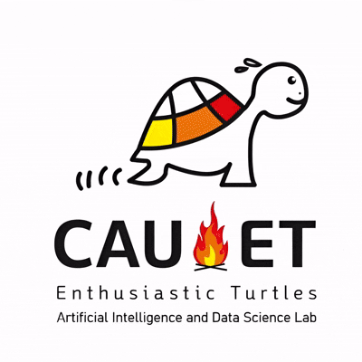

News
Research & achievements- 4th Place Our CAU_KU team (, Dongjae Lee, Donggun Kim, Jeongbin You, Younghyuk Kim, Wuming Gong, Seungsang Oh and ) ranked 4th place on Screening for Cognitive Impairment During Sleep Studies: The George B. Moody PhysioNet Challenge 2026 at the George B. Moody PhysioNet Challenges 2026.
- (2026). A Controlled Benchmark of Pretrained Speech Representations, Acoustic Features, and Classifiers for ALS Speech Assessment. The Korean Journal of Applied Statistics, Accepted.
- , Guijin Son, Hyunwoo Ko, Chanyoung Kim, JunYoung An, Kyubeen Han, Youngjae Yu, (2026). KMMMU: Evaluation of Massive Multi-discipline Multimodal Understanding in Korean Language and Context. 6th Multilingual Representation Learning Workshop (EMNLP 2026 Workshop), Accepted.
- (2026). A Deep Learning Approach Using Hybrid Features for ALS Severity Prediction from Speech. The Korean Journal of Applied Statistics, 39(4), 401–417. [pdf]
- Sanghyeok Chung, Seungsang Oh, Donggun Kim, Jeongbin You, , Sunmook Choi, Soyul Han (2026). BEAT2AASIST: BEATs Feature Splitting with Dual-Branch AASIST for Environmental Sound Deepfake Detection. IJCAI-ECAI 2026, Bremen, Germany. [Code | pdf]
- , Donggun Kim, Dongjae Lee, Seungsang Oh, Wuming Gong and (2026). Auxiliary-conditioned cross-attention with physiologically interpretable features for Chagas disease detection from 12-lead ECGs. Physiological Measurement, 47(7), 075014. [Link]
- 1st Place · DCASE 2026 Task 5 Our CAU team (Hyun Jun Kim, , Yu Ra Kim, , Bo Eun Choi, Changwon Lim, ) ranked 1st place at the DCASE 2026 Audio-Dependent Question Answering Challenge. [Results | Tech Report]
- Sanghyeok Chung, , Donggun Kim, , Jeongbin You, , Sunmook Choi, Soyul Han, Seungsang Oh, (2026). BEAT2AASIST Model with Layer Fusion for ESDD 2026 Challenge. ICASSP 2026, Barcelona, Spain. [Link | Code | pdf]
- (2026). Sound Event Detection System with Frequency-Aware Enhancements and Semi-Supervised Learning. IEEE Access, 14. [Link]
- 3rd Place · ICASSP Challenge Our CAU_KU team (Sanghyeok Chung, , Donggun Kim, , Jeongbin You, , Sunmook Choi, , Seungsang Oh, ) ranked 3rd in the Environmental Sound Deepfake Detection Challenge, Track 2. [Link]
- 4th Place · ICASSP Challenge Our CAU team () ranked 4th in the Speech Analysis for Neurodegenerative Diseases Challenge, Track 2.
- Seungeun Lee, Sunmook Choi, , Sanghyeok Chung, , Seungsang Oh, (2025). iWAX: interpretable Wav2vec-AASIST-XGBoost framework for voice spoofing detection. Scientific Reports, 15, 40491. [Link | pdf]
- (2025). Impact of neural-vocoder-generated spoofed speech on spoofing-detection performance. The Korean Journal of Applied Statistics, 38(5), 679–692. [pdf]
- (2025). Benchmarking Deep Learning vs. Traditional Machine Learning on Biomedical Tabular Data. Journal of The Korean Data Analysis Society, 27(5), 1501–1515. [pdf]
- Rafi AM et al., including (2025). A community effort to optimize sequence-based deep learning models of gene regulation. Nature Biotechnology, 43(8), 1373–1383. [PubMed | pdf]
- , Sunghwan Park, Jaewoo Lee, (2025). OD-SHIELD: Convolutional Autoencoder-based Defense against Adversarial Patch Attacks in Object Detection. IEEE Access, 13, 98242–98252. [Link]
- , Sunghwan Park, , Jaewoo Lee (2025). A Benchmark of Unlearnable Examples for Medical Images. PPAI-25, AAAI Workshop on Privacy-Preserving Artificial Intelligence, Philadelphia, USA.
- , Sunmook Choi, , Sanghyuk Chung, Seungeun Lee, , Seungsang Oh, (2025). Enhancing voice spoofing detection in noisy environments using frequency feature masking augmentation. Engineering Science and Technology, an International Journal, 63, 101972. [Link]
For earlier announcements (2020–2024), see the original news archive.